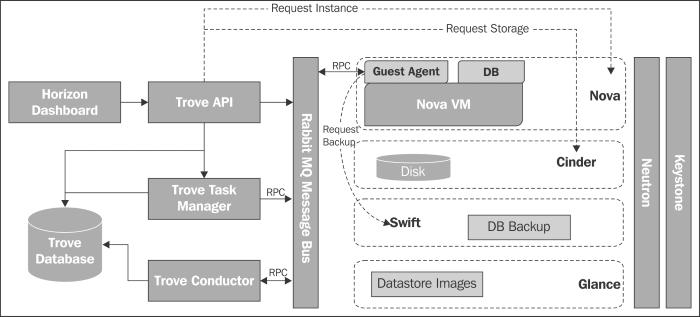
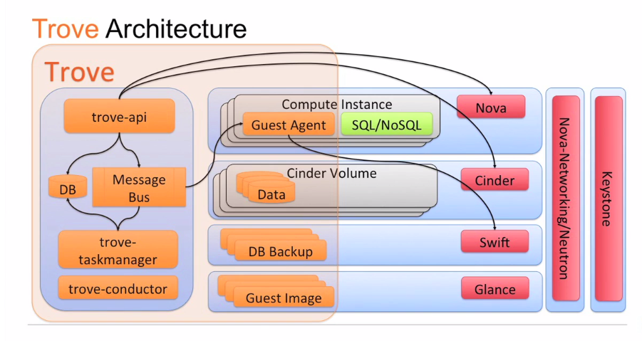
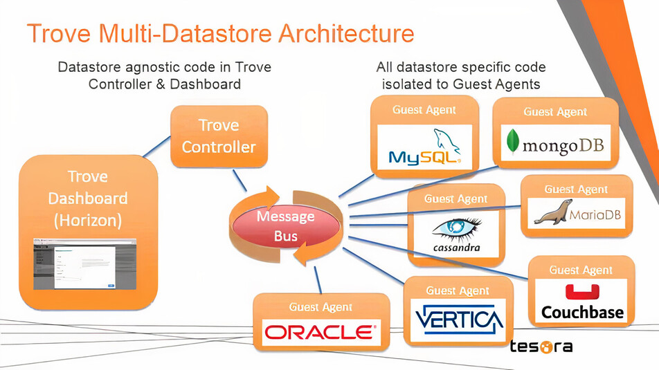
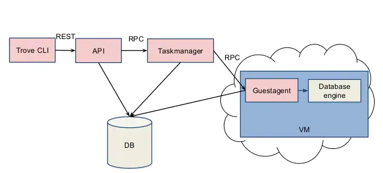

how to install trove
#temp
tổng quan về trove
- trove là database as a service
- trove orchestation các instance database: tạo instance, quản lí lifecycle, tăng giảm kích thước database
- trove có tương tác với nova: quản lí vm instance, ...
trove gồm:
- api server: là cái để tương tác
- là web service lắng nghe request từ client, làm nhiệm vụ authen
- communicate với task manager với task nặng
- communicate trực tiếp tới guestagent với task nhẹ (list users)
- taskmanager: là thằng xử lí các logic nặng nhất
- provisioning instances, managing the lifecycle of instances, and performing operations on the instance
- It takes messages from the API Server, responds accordingly with a message of consent, and begins tasks
- một task manager có thể quản lí nhiều instance vì dựa vào instance_id
- guestagent: là thằnh phần đi kèm theo database instance
- It is in charge of bringing a datastore online, which can be a complicated task
- The Guest Agent also sends heartbeat messages to the API via conductor.
- mỗi một instance database sẽ có một guest agent đi kèm
- listen on topic RabbitMQ
- conductor:
- runs on the host, responsible for recieving messages from guest instances to update information on the host
- For example, instance statuses and the current status of a backup
- Conductor listens for RPC messages through the message bus and performs the relevant operation
- listen topic on RabbitMQ



